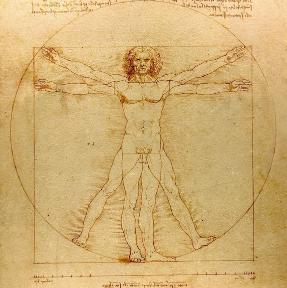

This post is parallel to our earlier post on vintage selling and represents preliminary thoughts on vintage selling and generative matchmaking. This is key buzzword for 2024.
Supply versus Demand in Vintage Selling
Our impression is that the vintage clothing market has a significant gap between supply and demand. This gap is especially pronounced in quality used men’s clothing. By “gap” we mean that customers come to the store looking to spend money, they spend time going through the clothing, see nothing they like, and leave without buying anything. Why? Because they don’t see what they want, i.e. the supply does not overlap with the demand. This is the gap we’re talking about.
It appears the total space of customers is the sum of two distinct “mind sets” or “psychological states”. These two mindsets approximately correspond to “feminine” and “masculine” buyers, and are summarized in the idiom “women shop. men buy.” There’s many reference on this subject, for example:
Wharton School of Business Podcast
Washington Post article from 1999
Men versus Women shopping statistics
Our specific purpose here is to describe the strategy for the masculine psychological type. We propose the “masculine mind” is mission oriented and judgemental. They dislike the time required to search through random racks for items that may or may not be there, which may or may not fit, at this or that price, etc.. Other types find this aspect of vintage hunting fun, but our premise is that the “masculine” psychology does not enjoy this at all. This makes for significant barrier between these types of buyers and the vintage stores. Our hypothesis is this: the barrier is removed by proactively generating suggestions to the masculine customer.
Let’s make this concrete. A customer walks into the shop. Before the clients even look through the racks, can the vintage seller generate a list of ten items which positively interest the customer? I.e. items that the customer wants “Wow I have to have that!”.
The good news about the obnoxious loud mouth masculine type is this: they are willing to buy a whole setup now at a good price and leave happy. In and out. It really doesn’t have to be prolonged ordeal for anybody. Nobody has to random search through racks, unless they really want the “thrill”.
Problem Statement: Generating Probabilities of Sale with Confidence
We begin with a description of the process as we see it. The vintage seller has a supply \(X\) of items. This supply is initially opaque and unknown to customers \(Y\). A customer \(y\) walks into the shop, and they have a null feeling to mostly everything. For example, all the tshirts are hanging “side by side” with their graphics hidden, so the items all “look the same” in the customer’s eye. Maybe something catches their eye immediately, or perchance by random searching through the racks the customer \(y\) sees something that strikes them.
It’s all about the eye and colour, perception and experience in the customer. Visibility is the primary cause of a sale. An extreme instance of this problem is at shop [X] which is very dark inside, and the racks are overstuffed with items, and there’s no room to move.
From another point of view, the vintage seller has no sense of the client’s preferences. The vintage seller likely doesn’t know the buyer even exists before they physically walk into the store. What’s the minimal amount of information that sellers should know about their average customers? We think there’s benefits to vintage sellers having the items ready for customers before the customers walk through the door! This sounds impossible, but there’s a way. It requires predicting the preference probabilities \(q(x,y)\) with confidence. We’re using “\(q\)” as placeholder for the probabilities which we are trying to predict, i.e. predicting the event of item \(x\) selling to \(y\). The questions we want to answer are:
“What is the probability of item \(x\) being sold to \(y\) at the sales price today?”
“When a customer walks into the shop, what are the high- and low- probability items relative to the customer \(y\)’s preferences? i.e. for which \(x\) is \(q(x,y)\) more than fifty percent probable?”
So we are asking about probabilities \(q\) of items being sold to customers. The probabilities represented in \(q\) are themselves uncertain. In otherwords, the customer \(y\) doesn’t know what they want. This is where the art of curating a vintage collection enters: the seller sets the fashion and effectively tells the customer what to buy.
Knowing Your Audience, Fitting the Vetruvian Man, Colour Preferences.
The problem is knowing or not knowing your audience. For the machine learning engineers, it raises the question “What are the relevant numerical statistics worth knowing about your audience?” We use \(x,y\) as symbols intended to represent real items and real customers. But before we can perform any machine learning method, the symbols \(x,y\) need to be correlated to floating point decimals. This is awkward process, and we try to keep it as simple as possible.
Ultimately fashion and clothing is about the human form. So the basis of everything is a person in their body:

We imagine every customer is basically their own Vetruvian person, like universal mannequin. What does anybody need to know about Vetruvian man to recommend some clothing items? Obviously we don’t need a longform interview. In fact, it’s better to keep it as simple as possible. We think everything reduces to examples. The only thing the seller needs is a summarized precis of colour pattern combinations. Again we really are trying to keep it as simple as possible.
Definition. A colour pattern is an \(RGB\) valued measure \(\mu\). An outfit is a triple of colour pattern measures \(\mu_1, \mu_2, \mu_3\).
The idea is that a choice of outfit is formally represented as a choice of colour patterns \(\mu_i\) on pants, undershirt, and overshirt. The definition suggests that a person’s preferences depends mostly on triplets of colour patterns. What defines a person’s style are their preferences relating to combinations of colours. We emphasize that it’s not strictly preferences in the colours themselves, but preferenecs in the combinations of the colour. The contrast and comparison of these distributions together, i.e. whether they clash or correlate, is how we represent the customer’s style preferences.
Personally the author thinks it’s amusing to wear homogeneous colour patterns, i.e. red on red, green on green, blue on blue. We like simplicity and think it’s fun when eveything adds up to “red plus red plus red equals red”. But in other settings its better to be balanced, having at most three primary colours, etc..
This makes us wonder about birds and their wonderful plumage. Is there experiment to decide whether birds share common preferences in the colour distributions? It’s curious question…
Summary
To summarize the discussion:
The theme is generative matchmaking. I.e. if the customers can only see ten items to potentially buy, then generate a list of ten items which have better odds than ten random items. I.e. quickly curate a personal list to the customer. This means predicting the probability \(q(x,y)\) of the event of item \(x\) being purchased by customer \(y\) at the sale price. The purpose is to predict the most probable events, where the probability \(q\) is maximized.
We hypothesize that customers buy items depending on colour patterns \(\mu\) of the fabric. We assume that customers buy outfits depending on their preference for combination colour patterns \(\mu_1\), \(\mu_2\), \(\mu_3\) of pants, undershirt, and overshirt.
We assume the high probability colour distributions of customers can be “learned from examples”.
Our goal here is “setting the stage” for the generative model. We identify the colour pattern distributions as the main eye factor in choosing clothes. Personally we know we only like clothes that have good colours and tones. To actually code, train, deploy the generative model we are suggesting is the next step.
[To be continued – JHM]